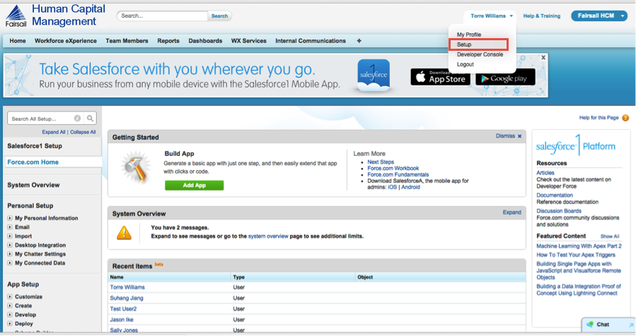
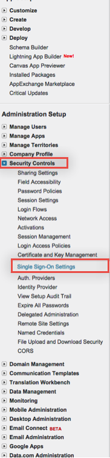
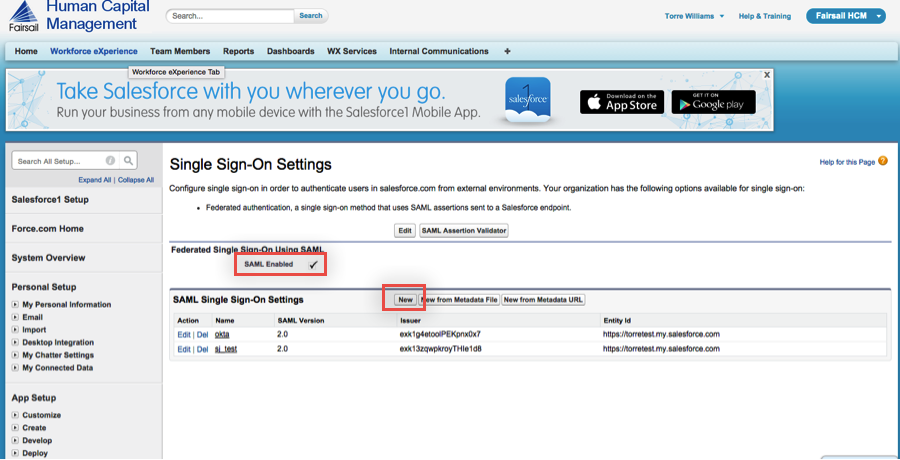
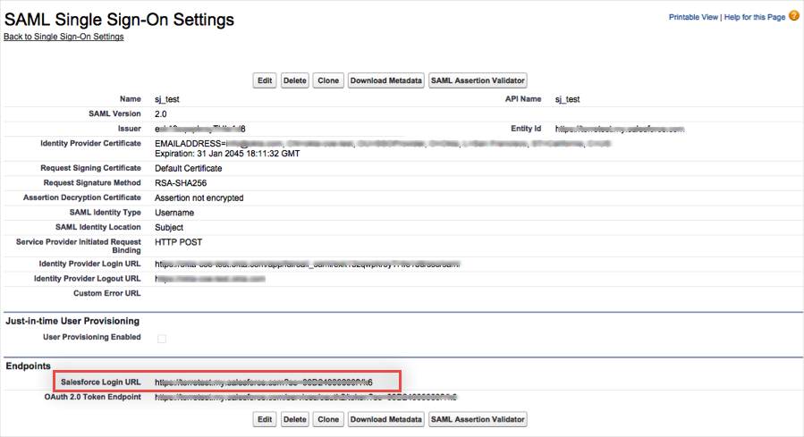
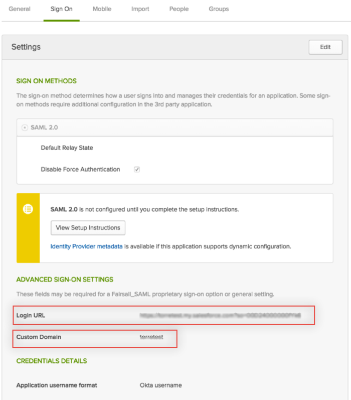
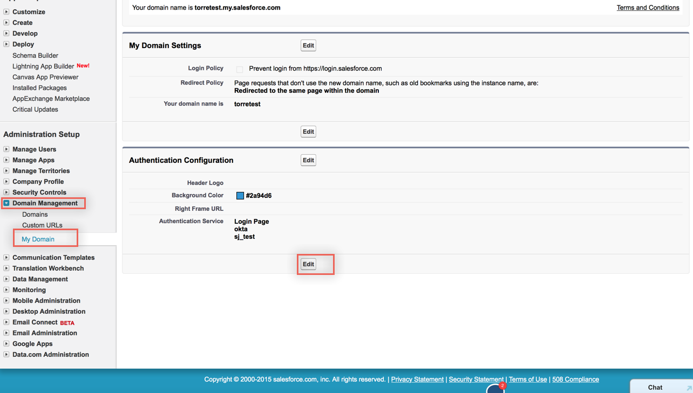
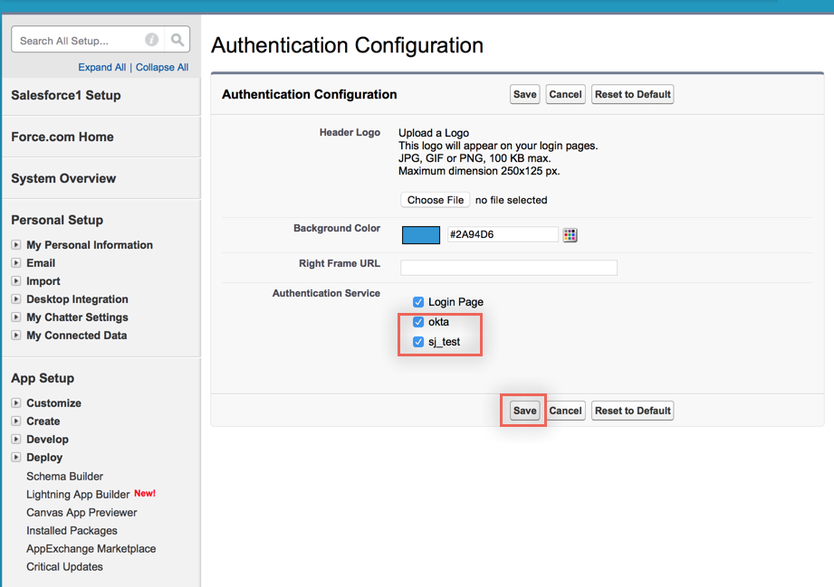

Log in to your Fairsail administrator account using the same administrator username and password that you use for Provisioning in Okta.
In the upper right, select your login, then select Setup from the dropdown menu.

On the Setup page, select Security Controls > Single Sign-On Settings from the left navigation pane:

On the Single Sign-On Settings page, make sure the SAML enabled box is checked, then click New:

On the SAML Single Sign-On Settings page, enter the following (see screenshot at end of step for reference):
If you have multiple end-points enabled, you may need to setup a Name and API Name. Set these values accordingly.
Set the SAML Version to 2.0.
For Issuer, copy and paste the following:
Sign into the Okta Admin Dashboard to generate this variable.
For Entity ID:
If you have a custom domain setup, use https://[customDomain].my.salesforce.com
If you do not have a custom domain setup, use https://saml.salesforce.com
For Identity Provider Certificate, download, then upload the following certificate:
Sign into the Okta Admin Dashboard to generate this variable.
Set the SAML Identity Type to Assertion contains User's salesforce.com username.
Set the SAML Identity Location to User ID/identity is in the NameIdentifier element of the Subject statement.
For Service Identity Provider Initiated Request Binding, select HTTP POST
For Identity Provider Login URL, copy and paste the following:
Sign into the Okta Admin Dashboard to generate this variable.
For Identity Provider Logout URL, copy and paste the following:
Sign into the Okta Admin Dashboard to generate this variable.
This URL sends your users to their Okta home page when they log out of Fairsail.
Click Save.

Once you click Save the following page will appear, make note of the Salesforce Login URL:

In Okta, select the Sign On tab for the Fairsail app, click Edit then enter the following:
Enter the Salesforce Login URL in the Login URL field.
If you are using a custom domain, enter that value in the Custom Domain field, otherwise, leave it blank.
Click Save.

Done!
Notes:
IdP-initiated flows and SP-initiated flows are supported.
For SP-initiated flows:
In Fairsail, select Domain Management > My Domain.
In the Authentication Configuration section, click Edit.

Check the Authentication Service(s) you created, then click Save.
